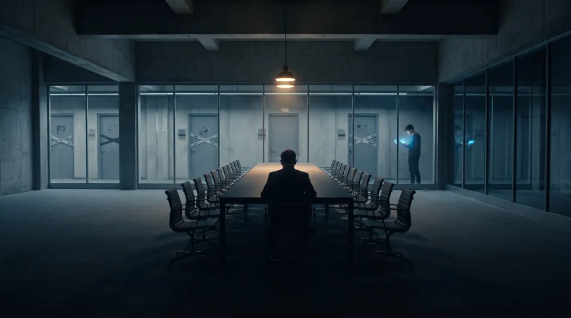
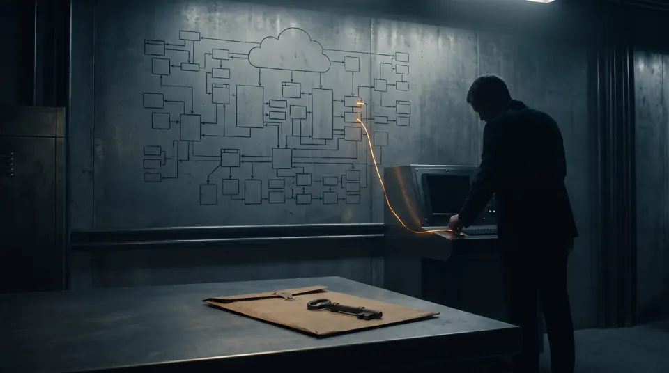

Série em dois episódios
Série: O Silêncio na Escala — Chamada e índice

Há sistemas tão grandes que a primeira lição não é a sintaxe. É a gravidade. Quando o software sustenta o rendimento de dezenas de milhões de famílias, um erro deixa de ser um cupom de desconto e vira pauta. Em volta dessa gravidade cresce uma burocracia que não está ali por distração: é um freio, desenhado para que uma decisão isolada não derrube o pagamento de amanhã.
Esta série curta, O Silêncio na Escala, conta essa travessia em dois episódios, sem nomear a instituição. O relato é de quem já acumula dezoito anos de estrada e entra num ambiente em que a verdade não é dita em voz alta, o acesso demora semanas e a geração mais nova pede à máquina uma arquitetura que a máquina não viveu.
Os dois episódios

Cronograma: chamada e episódio 1 em 02/11; episódio 2 em 26/11 de 2026.
Dicionário de Termos Técnicos e Negócios (para leigos)
Conceitos que atravessam os dois episódios:
- Escala
- Volume de gente, dados e dinheiro tão grande que uma falha pequena deixa de ser um defeito local e passa a afetar milhões de pessoas ao mesmo tempo.
- Silêncio operacional
- Falar só quando alguém pede e só o que foi pedido. Em ambiente político, opinião solta vira dona de um problema que não era seu.
- Burocracia como freio
- Aprovações, tickets e comitês que atrasam de propósito. O objetivo é impedir que um comando errado vaze dados ou trave um pagamento.
- MCP (Model Context Protocol)
- Um modo de ligar um modelo de linguagem ao contexto real de uma ferramenta ou de uma infraestrutura, em vez de usá-lo só para gerar trechos de código soltos.
Nota: Série em dois episódios (Fiction-Based Technical Insights & Engineering Realism). A instituição não é nomeada. O índice é esta página.
Comece pelo episódio 1: O Silêncio Sobrevive à Escala.